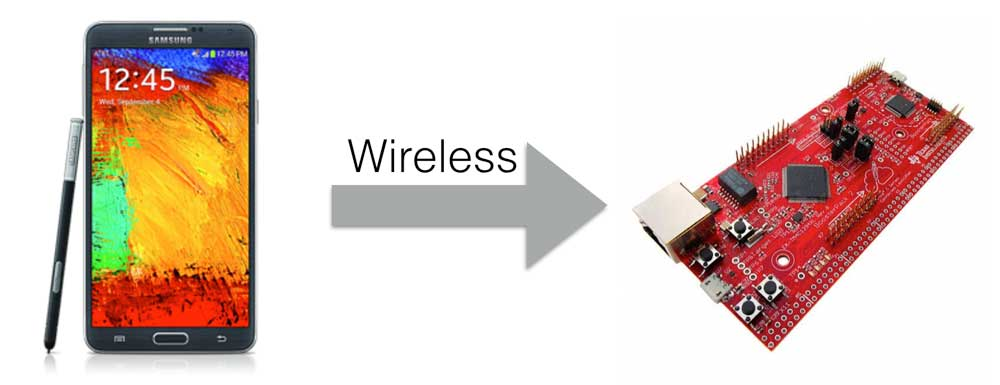

This is a simple project that can flash firmware into a TI Board(tested on TM4C1294XL) wirelessly through Bluetooth using an Android smart phone (tested with Samsung Galaxy Note3).
It also provide you with some basic ideas of how to interact with board through Bluetooth using your phone.
Please be aware that this project is just a basic usable demo instead of a complete and sophisticated system. I guess it can give you a basic inspiration to achieve your goal.
Wireless firmware update is not just a simple task that can be achieved by just using a phone. The programs on the board are also very important.
My implementation follows the official instruction. You can download the EK-TM4C1294XL Firmware Development Package USER’S GUIDE here.
In the section 2.3 2.4 2.5, it illustrates clearly how the firmware binary file can be flashed into the board's rom through serial port, which makes it possible to flash the firmware through a Bluetooth module.
Instead of using the given two demos, I programmed myself three other more interesting demos to flash, which are interactive.
The boot_serial (illustrated in User Guide section 2.5) should be added to every firmware you want to flash, because this makes it possible for the board to receive the binary file to flash into rom.
You can download these official programs and my demos here, or the official package here.
P.S. You need to use official flash tool(download here) to flash boot_serial.bin from 0x0000 address first and flash one of the demos from the address of 0x4000 through USB on Windows before the first time you try flashing wirelessly on Android. If the any of the implementations failed, you can use this flash tool to bring the board back to normal.
Before you install the app, you need to change app's source code to match your Bluetooth module's mac address on your TI board(I am sorry to say this is a really bad thing I made in my app, because I didn't use search function to connect to a Bluetooth module. I would be very grateful if you can use search function in your own app to connect a Bluetooth module.). Then generate your own version app.
Besides, you also need to put your demo binary files into your device's internal storage root folder.
Then you can connect, and begin to flash.
When the board contains an official demo, you need to press SW1 until LED2 is turned off, then start your burning. When the board contains one of my customized demos, you need to press SW1 and the four LEDs will all turn on, then start your burning.

You can switch to Talk to Device page to interact with the board.
My three customized demos have different functions.
LEDfollow.bin : you can press B1, B2, B3, or B4 button to turn the four LEDs on board on or off.
LEDbreath.bin : you can press up and down to add or reduce the breathing LED frequecy; you can also press left or right to change the fluid direction.
CalculatorDEMO.bin : you can input an expression ending up with a '#' in the text box to let the board calculate for you, and it will return the result to the receive part of this page(for instance, you can input (1+2+3)*4-5/2#) and the board would return (1+2+3)*4-5/2=22 for you).